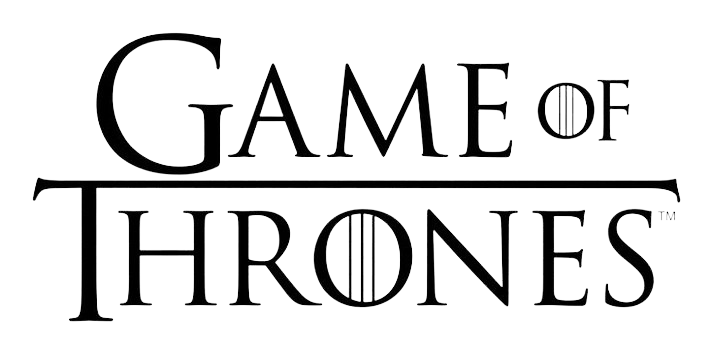
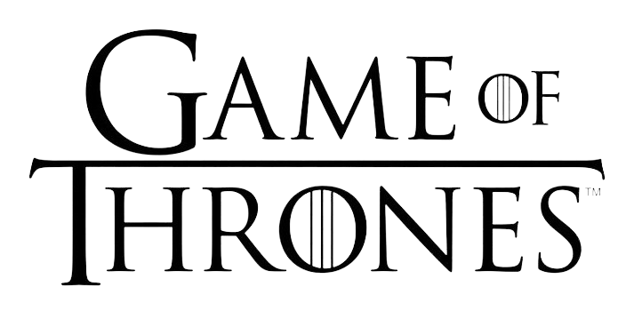
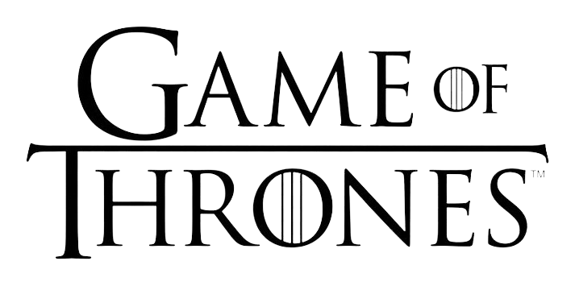
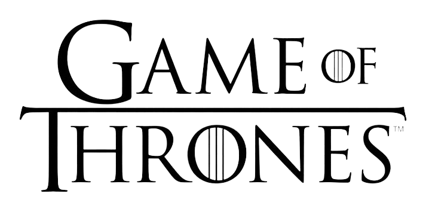

 

Winter
is
coming
Fire
and
Blood
Game of Thrones é uma série de televisão norte-americana criada por David Benioff e D. B. Weiss, baseada na série de livros A Song of Ice and Fire de George R. R. Martin. Neste mundo temos várias Famílias/Casas importantes que iremos ver nesse projeto.
As Grandes Casas são as famílias mais poderosas da nobreza dos Sete Reinos, muitas vezes sendo ex-realeza e agora juramentados diretamente ao Trono de Ferro. A Casa Targaryen tomou o controle de boa parte de Westeros durante a Guerra da Conquista. A Casa Stark de Winterfell, dos antigos Reis do Norte, se tornaram vassalos e Protetores do Norte do novo rei, Aegon I Targaryen. A Casa Arryn do Ninho da Águia, antigos Reis da Montanha e do Vale, se tornando Protetores do Leste, enquanto a Casa Lannister de Rochedo Casterly, os Reis do Rochedo, se tornaram os Protetores do Oeste. Os Lannisters são os mais ricos das grandes casas. O meio irmão de Aegon, Orys Baratheon, matou Argilac o Arrogante, o último Rei da Tempestade da Casa Durrandon. Orys se casou com a filha de Argilac, Argella Durrandon, formando a Casa Baratheon de Ponta Tempestade, a mais nova das grandes casas de Westeros.
Hear
me
Roar